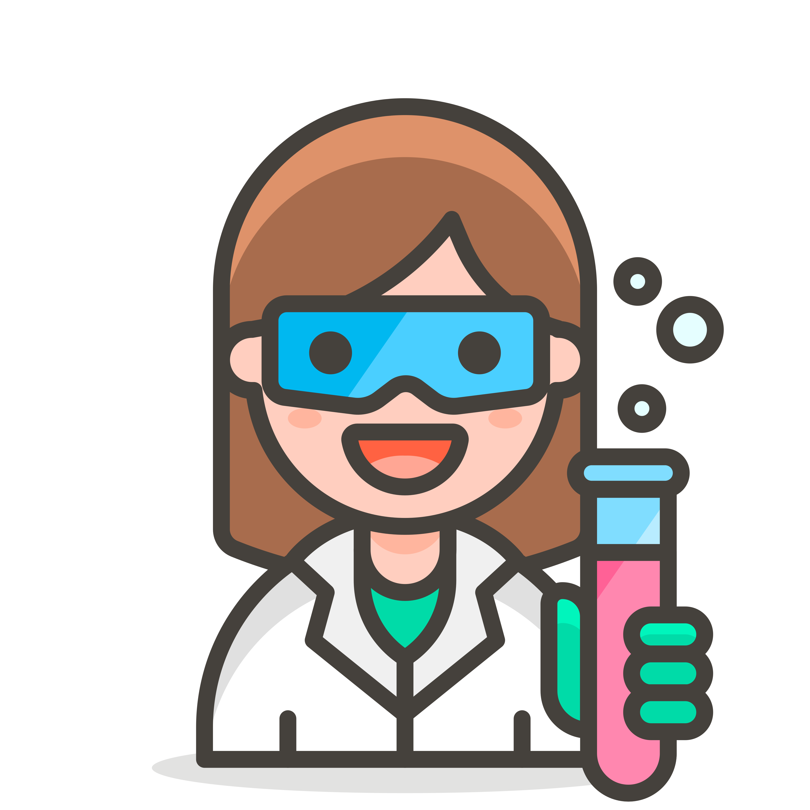

Scientific Researcher
I landed my first research internship in 2015 with the Manchester Collaborative Centre for Immunology Research.
I’m an aspiring web developer who loves all things tech. I have worked in lots of different jobs and I am excited to bring use my growing skillset to create beautiful, responsive and accessible websites.
As a life-long learner who's always been interested in expanding my skills; I've worked as a research scientist, worked in the medical field and I am currently a teacher and private tutor.
I landed my first research internship in 2015 with the Manchester Collaborative Centre for Immunology Research.
I finished my internship and was authored in the European Society for Cardiothoracic Surgery for my collaborative efforts.
I graduated from the University of Salford with a 1st class degree in Biomedical Science (Hons)
I initially started coding JavaScript with the Grasshopper app on my commute to work.
I attended my first coding class with Code and Stuff and then applied for a tech programme. I also started my masters in education and teaching full time.
The Tech-Up programme helped me upskill, network and understand which parts of tech I enjoyed the most. After, I took a hiatus to focus on my masters.
I decided that I needed to streamline my learning so I joined the BlackCodHer bootcamp. I also graduated with my Masters in Education.